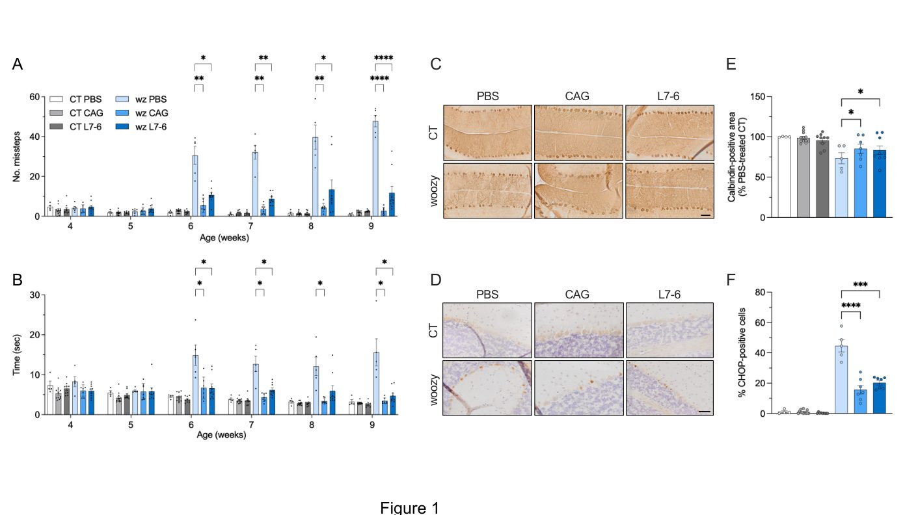
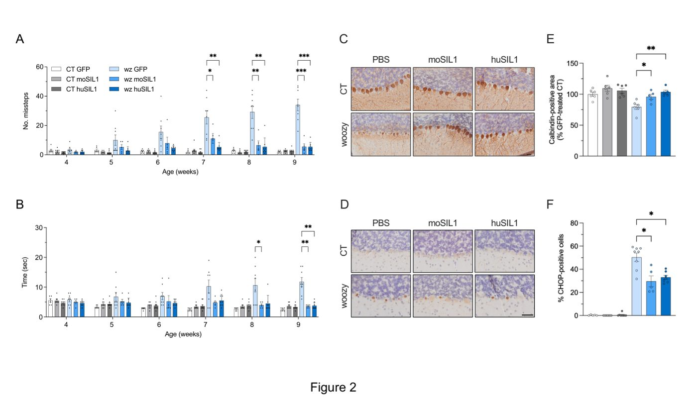
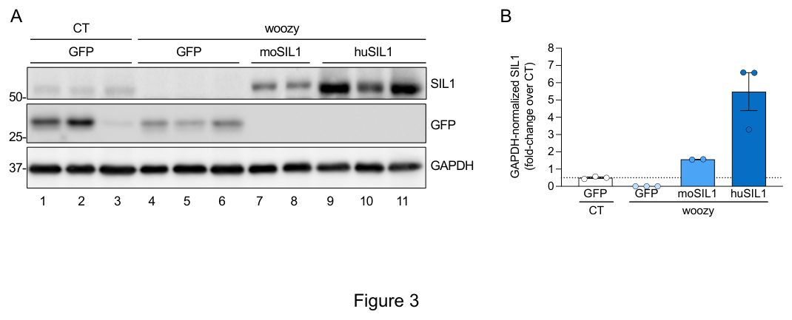
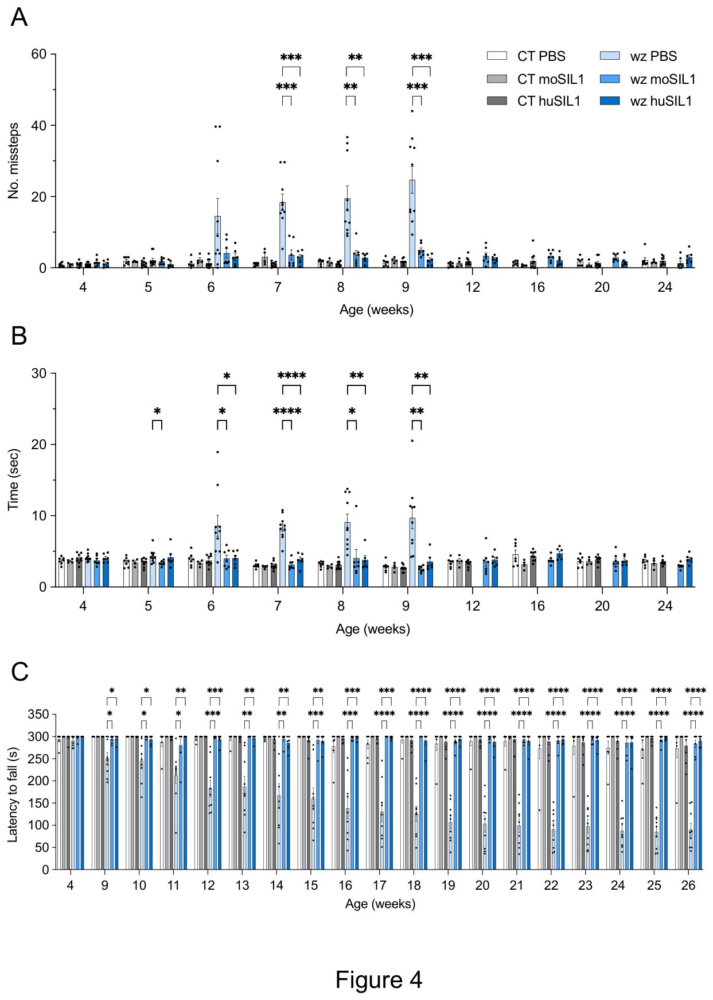
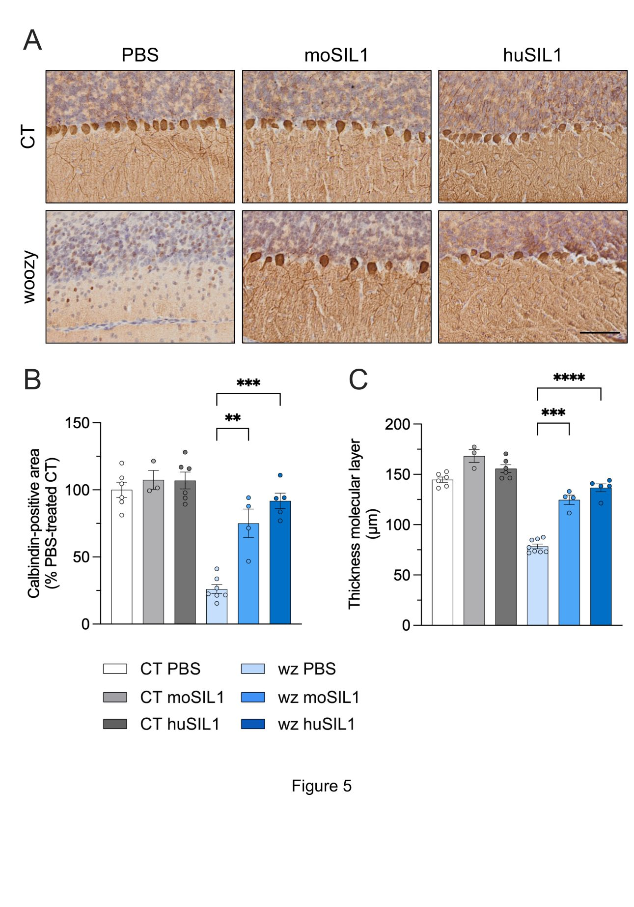
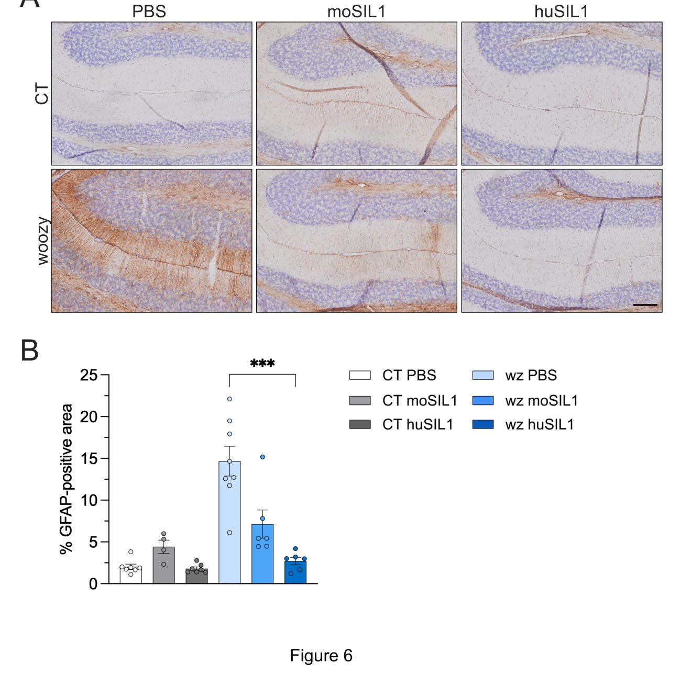
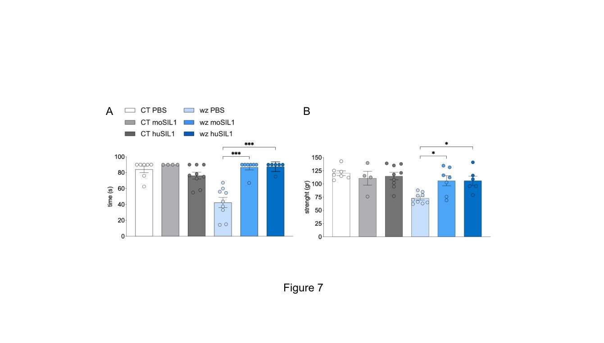
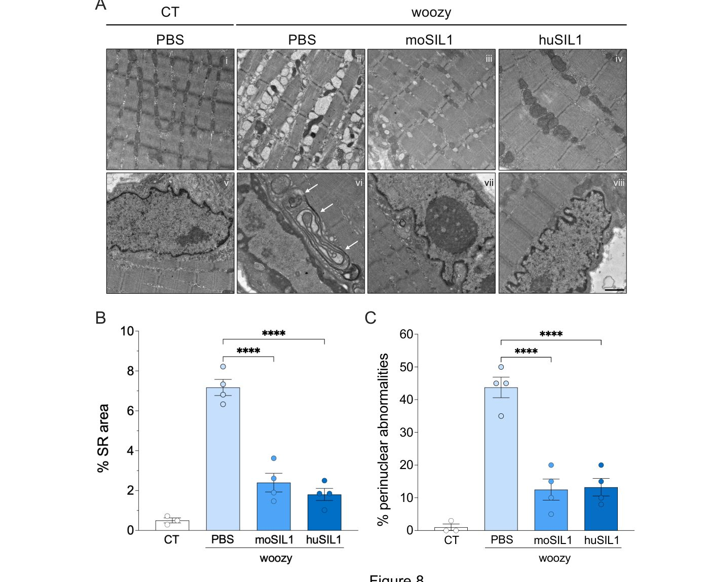

Gen terapiyasi kam uchraydigan sindromning oldini oldi
{kind=link}

Marnesko-Shegren sindromi SIL1 oqsili yetishmovchiligi tufayli yuzaga keladigan va harakat buzilishlari bilan namoyon bo'ladigan og'ir irsiy kasallikdir. Olimlar adeno-assotsiatsiyalangan virus yordamida sog'lom genni markaziy asab tizimiga yetkazish usulini sinab ko'rdi. Bu yondashuv hayvonlarda kasallik alomatlarining oldini olish va hujayralarni himoya qilish imkonini berdi.
Asosiysi
- AAV-SIL1 terapiyasi sichqonlarda ataksiya rivojlanishining oldini oladi.
- Muolaja Purkinje hujayralarini degeneratsiyadan saqlab qoladi.
- Davolash effekti 26 hafta davomida barqaror saqlanib qoldi.
Batafsil
Kasallik SIL1 genidagi mutatsiyalar bilan bog'liq bo'lib, bu oqsil endoplazmatik to'r funksiyasini ta'minlaydi. Uning yo'qligi hujayralarda stress keltirib chiqaradi va miyachadagi Purkinje hujayralarining nobud bo'lishiga olib keladi. Oldingi dor vositalari bu jarayonni to'xtata olmagan yoki nojo'ya ta'sirlar keltirib chiqargan.
Yangi tajribada SIL1 nuqsoni bo'lgan sichqonlarga hayotining boshida AAV-PHP.eB virusli vektorlari yuborildi. Gen yetkazilishi ataksiya rivojlanishining oldini oldi, hujayra stressi belgilarini kamaytirdi va miyacha tuzilishini saqlab qoldi. Tanlab tiklash ham harakat funksiyasini tiklash uchun yetarli bo'lib chiqdi.
Terapevtik samara 26 haftalik kuzatuv davomida saqlanib qoldi. Shuningdek, usul mushak to'qimalarining holatini ham yaxshiladi. Bu yondashuv odamlardagi shu kabi irsiy kasalliklarni davolash uchun asos bo'lishi mumkin.
Cheklovlar
Tadqiqot faqat sichqon modeli asosida o'tkazilgan bo'lib, natijalarni klinikaga tatbiq etish uchun qo'shimcha xavfsizlik sinovlari zarur.
Maqolaning batafsil tahlili
Annotatsiya
Kirish
Marinesco-Sjögren sindromi nodir, erta boshlanadigan ko'p tizimli kasallik bo'lib, u asosan miyacha ataksiyasi va miopatiya bilan tavsiflanadi hamda SIL1 genidagi funksiyani yo'qotuvchi mutatsiyalar natijasida yuzaga keladi. Hozirgi kunda ushbu xastalikka qarshi maxsus davolash usuli mavjud emas. Tadqiqotchilar adeno-assotsiatsiyalangan virus (AAV) yordamida amalga oshiriladigan gen terapiyasi woozy sichqon modeli asosida kasallikning oldini olishi mumkinligini o'rganib chiqishdi.
Muhim
Marinesco-Sjögren sindromi SIL1 geni nuqsonlari tufayli kelib chiqadi va davolash usuliga ega emas, shuning uchun olimlar woozy sichqonlarida AAV vektorli gen terapiyasini sinab ko'rishdi.
Usullar
Yangi tug'ilgan sichqonlarga umumiy yoki Purkinje hujayralariga xos bo'lgan promotor nazorati ostida SIL1 genini tashiydigan AAV-PHP.eB vektorlarining intrakerebroventrikulyar in'eksiyalari bajarildi. Hayvonlarni kuzatish va ularning holatini baholash 26 hafta davomida olib borildi.
Izoh
AAV-PHP.eB vektori — bu terapevtik genetik materialni markaziy asab tizimiga samarali yetkazib berishga qodir bo'lgan sun'iy ravishda yaratilgan virusli tashuvchi vosita.
Natijalar
Platsebo olgan nazorat guruhidagi woozy sichqonlarida miyachadagi Purkinje hujayralarining nobud bo'lishi hamda endoplazmatik retikulum stress yo'llarining faollashuvi bilan bog'liq og'ir harakat buzilishlari kuzatildi. Aksincha, AAV-SIL1 bilan davolash ataksiya rivojlanishining oldini oldi, Purkinje hujayralarini saqlab qoldi va stress yo'llari faollashuvini kamaytirdi. SIL1 ekspresiyasining faqat Purkinje hujayralarida tiklanishi harakat faoliyatini to'liq normallashtirish uchun yetarli bo'lib chiqdi, bu esa kasallik patogenezida aynan ushbu hujayralar disfunksiyasining hal qiluvchi rolini tasdiqlaydi. Terapevtik samaradorlik 26 haftalik kuzatuv davri mobaynida saqlanib qoldi va mushak funksiyasining yaxshilanishi hamda mushak patologiyasining kamayishi bilan birga kechdi.
Ehtiyot bo'ling
Tajribalar sichqon modeli (woozy) yordamida o'tkazilgan, shuning uchun klinik amaliyotga joriy etishdan oldin yirikroq organizmlarda qo'shimcha translyatsion tadqiqotlar talab etiladi.
Kirish
Marinko-Shegren sindromi (MSS) erta bolalik davrida boshlanadigan va hozirgi kunda davosi mavjud bo'lmagan kam uchraydigan autosomal retsessiv kasallikdir. Tug'ma katarakta, miyachacha atrofiyasi va miopatiya MSS ning asosiy diagnostik belgilaridir. Shuningdek, intellektual buzilishlar, niyat tremori, dizartriya, skelet anomaliyalari, past bo'yli bo'lish, nistagm, strabizm va gipergonadotrop gipogonadizm tez-tez kuzatiladi. Birlamchi alomatlar odatda hayotning dastlabki oylarida paydo bo'ladi, chunki kasallangan chaqaloqlar erta motor ko'nikmalarini o'zlashtira olmaydi. Harakat funksiyasi bolalik davrida yomonlashadi, biroq bir necha yillik progressiyadan so'ng kasallik oldindan aytib bo'lmaydigan yoshda va og'irlik darajasida barqarorlashadi, kutilayotgan umr ko'rish davomiyligi esa normal bo'lib qoladi.
Muhim
Marinko-Shegren sindromi katarakta, ataksiya va miopatiya bilan kechuvchi, boshlang'ich yomonlashuvdan so'ng turg'unlashadigan og'ir tug'ma kasallikdir.
Kasallikning erta bosqichida uning rivojlanishini oldini oladigan, kechiktiradigan yoki yumshatadigan chora-tadbirlar motor funksiyasi va hayot sifatiga kuchli hamda uzoq muddatli ta'sir ko'rsatishi mumkin. Taxminan 60% hollarda MSS SIL1 genidagi gomozigotali yoki kompaund-geterozigotali mutatsiyalar natijasida yuzaga keladi, bu esa SIL1 oqsili ekspressiyasi va/yoki funksiyasining yo'qolishiga olib keladi. Sil1 genidagi o'z-o'zidan sodir bo'ladigan mutatsiya, shuningdek, inson kasalligining asosiy jihatlarini, shu jumladan Purkinye hujayralari degeneratsiyasi bilan kechadigan miyachacha ataksiyasi va skelet mushaklari patologiyasini aks ettiruvchi yaxshi o'rganilgan woozy (wz) sichqonlar modelining fenotipiga asos bo'ladi.
SIL1 oqsili endoplazmatik retikulumda (ER) oqsillarning to'g'ri o'ralishini boshqaruvchi asosiy chaperon — BiP uchun nukleotid almashinuv omili sifatida ishlaydi. BiP chaperon faolligi ATP bog'lanishi va gidrolizi sikli bilan tartibga solinadi. SIL1 BiP da ADP-ATP almashinuvini osonlashtiradi va substratning samarali ajralishini ta'minlaydi. SIL1 yetishmovchiligi nukleotid almashinuvining buzilishiga, BiP va mijoz oqsillarning uzoq vaqt bog'lanib qolishiga, o'ralmagan oqsillarning to'planishiga, ER stressiga va o'ralmagan oqsillar javobining (UPR) faollashishiga olib keladi.
Izoh
O'ralmagan oqsillar javobi (UPR) — bu endoplazmatik retikulumda nuqsonli oqsillar to'planganda hujayrani himoya qiluvchi murakkab signal yo'li bo'lib, surunkali faollashganda apoptozga olib kelishi mumkin.
UPR — bu ER proteostazini tiklashga qaratilgan murakkab signal yo'lidir. PERK kinazasi UPR ning uchta asosiy effektoridan biri bo'lib, qolgan ikkitasi ATF6 va IRE1 hisoblanadi. Faollashgan PERK eukaryotik translyatsiyani boshlash omili 2 ning alfa kichik birligini (eIF2α) fosforillaydi. Bu mРНК translyatsiyasini to'xtatib, umumiy oqsil sintezini kamaytiradi. Biroq, ATF4 translyatsiya omili kabi ba'zi maxsus mРНК lar afzalroq tarjima qilinadi. Agar hujayralar o'ralmagan oqsillar yukini bajara olmasa, uzoq davom etadigan ATF4 sintezi CHOP ni qo'zg'atib, apoptozga olib keladi. Bu yo'l sinapslarni saqlash va omon qolish uchun doimiy oqsil sinteziga tayanadigan neyronlar uchun ayniqsa zararli.
Mualliflar ilgari PERK/eIF2α signallari woozy sichqonlarida Purkinye hujayralari degeneratsiyasi va ataksiyasidan oldin sodir bo'lishini hamda miopatiya boshlanishi bilan bir vaqtda skelet mushaklarida faollashishini ko'rsatgan edi. PERK ingibitorining GSK2606414 erta presimptomatik qo'llanilishi neyrodegeneratsiya va motor alomatlarini kechiktirdi, simptomsiz fazani uzaytirdi va mushak patologiyasini yaxshiladi. Biroq, GSK2606414 oshqozon osti bezi toksikligi bilan bog'liq bo'lib, kasallikni to'liq davolay olmadi.
Ehtiyot bo'ling
PERK ingibitorlari va ilgari sinovdan o'tgan birikmalar (trazodon, TUDCA) nojo'ya ta'sirlar yoki samarasizlik tufayli MSS modelini to'liq davolay olmadi.
Toksiklikni chetlab o'tish va mavjud dori vositalaridan foydalanish maqsadida tadqiqotchilar dori vositalarini qayta yo'naltirish yondashuvidan foydalangan holda eIF2α dan quyi oqimda PERK signallarini modulyatsiya qiluvchi dibenzoilmetan va trazodonni o'rganishdi. Biroq, bu birikmalar woozy modelida samarasiz bo'lib chiqdi va motor yetishmovchiligi yoki Purkinye hujayralari yo'qolishining oldini ololmadi. Xuddi shunday, safro sirrozi uchun tasdiqlangan va MSS ning hujayrali modelida samarali ekanligi ko'rsatilgan kimyoviy chaperon bo'lgan tauroursodeoksixolat kislotasi woozy sichqonlarida hech qanday foydali ta'sir ko'rsatmadi.
MSS ning aksariyat hollari SIL1 dagi funksiyani yo'qotuvchi mutatsiyalar natijasida yuzaga kelganligi sababli, SIL1 ni tiklash pastki oqibatlarini emas, balki birlamchi molekulyar nuqsonni hal qiluvchi to'g'ridan-to'g'ri terapevtik strategiyani anglatadi. Shuning uchun mualliflar o'z sa'y-harakatlarini gen terapiyasi yondashuviga qaratdilar. Rekombinant adeno-assotsiatsiyalangan virus (AAV) vektorlari bu maqsad uchun juda mos keladi, chunki ular Markaziy asab tizimi va skelet mushaklari kabi postmitotik to'qimalarda transgenning barqaror ekspressiyasini ta'minlaydi hamda preklinik va klinik tadqiqotlarda ijobiy xavfsizlik profilini namoyish etgan. Qolaversa, kapsidlarni muhandislik usulida yaratishdagi so'nggi yutuqlar markaziy asab tizimiga gen yetkazib berish samaradorligini sezilarli darajada oshirdi.
Ushbu tadqiqotda mualliflar SIL1 eksprimirlovchi AAV vektorlarini neonatal intratserebroventrikulyar yuborish MSS ning woozy sichqon modelida miyachacha va mushak patologiyasining rivojlanishining oldini olishi hamda uzoq muddatli funksional foyda keltirishi mumkinligini baholadilar. Shuningdek, ular faqat Purkinye hujayralarida SIL1 ekspressiyasining tanlab tiklanishi miyachacha disfunksiyasini bartaraf eta olishini va shu tariqa MSS dagi neyrodegeneratsiyaning hujayrali asosini hal qilishini o'rganib chiqdilar.
Natijalar
AAV vektorlari endoplazmatik retikulumda to'g'ri lokalizatsiyaga ega bo'lgan samarali va hujayra-selektiv SIL1 ekspresiyasini ta'minlaydi
Tdqiqotchilar pAAV-CAG-GFP plazmidasidagi yashil flüoresan oqsil (GFP) ketma-ketligini tegishli SIL1 kDНК lariga almashtirish orqali, universal CAG promotri nazorati ostida sichqon (mo) yoki odam (hu) SIL1 ni kodlovchi adenovirusli vektorlarni (AAV) yaratdilar. SIL1 ekspresiyasini PCs (Purkinje hujayralari) da selektiv tiklash miyachaning disfunksiyasini bartaraf etish uchun yetarli ekanligini aniqlash maqsadida, moSIL1 yoki GFP ni PCs larga xos bo'lgan L7-6 promotri nazorati ostida ekspresiya qiluvchi AAV vektorlari olindi.
Izoh
AAV (adeno-assotsiatsiyalangan viruslar) ilmiy va terapevtik maqsadlarda genetik materialni hujayralar va to'qimalarga yetkazish uchun xavfsiz virusli vektorlardir.
AAV9 yoki AAV-PHP.eB (bundan buyon PHP.eB) kapsidlari o'z ichida endogen SIL1 ga ega bo'lmagan woozy sichqon embrional fibroblastlarida (MEFs) sinovdan o'tkazildi. Ikkala AAV9-CAG-moSIL1 va PHP.eB-CAG-moSIL1 vektorlari ham SIL1 ekspresiyasini keltirib chiqardi, bunda PHP.eB S1A-Rasmda umumiy yuqori samaradorlikni ko'rsatdi. Kutilganidek, AAV9-L7-6-moSIL1 ushbu hujayra turida SIL1 ekspresiyasini qo'zg'atmadi, bu L7-6 promotrining PCs larga nisbatan o'ziga xosligini tasdiqlaydi.
Immunoflüoresent tahlil shuni ko'rsatdiki, transgen SIL1 oqsili endoplazmatik retikulum (ER) markeri PDI bilan S1B-Rasmda birga joylashadi, biroq Golji apparati markeri GM130 bilan S1C-Rasmda kesishmaydi, bu transgen oqsilning to'g'ri subhujayrali joylashuvini tasdiqlaydi. AAV orqali kodlangan SIL1 oqsili PNGase F va Endo H fermentlari yordamida deglikozillanishga sezgir bo'lib chiqdi, oxirgisi endoplazmatik retikulumda saqlanib qoladigan oqsillarga xos bo'lgan yetilmagan yuqori mannozali N-glikanlar mavjudligini ko'rsatadi (S2-Rasm).
Muhim
CAG va L7-6 promotrlariga ega AAV vektorlari endoplazmatik retikulumda to'g'ri joylashgan va Purkinje hujayralariga nisbatan yuqori tanlab ta'sir qiluvchi SIL1 sintezini muvaffaqiyatli ishga tushiradi.
L7-6 promotri transgen ekspresiyasini faqat PCs da boshqarishini tekshirish uchun madaniy organotipik miyacha kesmalarini (COCS) AAV9-CAG-GFP yoki AAV9-L7-6-GFP bilan tranduksiya qilindi. AAV9-CAG-GFP keng tarqalgan GFP belgilarini berdi, AAV9-L7-6-GFP bilan tranduksiya qilingan COCS larda esa GFP signali S3C-Rasmda faqat kalbindin-musbat PCs lar bilan cheklandi, bu L7-6 promotrining ushbu neyronlar uchun yuqori spesifikligini tasdiqlaydi.
Ehtiyot bo'ling
Tajribalar hujayra liniyalari va kemiruvchilarning organotipik miyacha kesmalarida o'tkazilganligi sababli, terapevtik ta'sirni yakuniy baholash uchun butun organizmlarda qo'shimcha tadqiqotlar talab etiladi.
PHP.eB-CAG-SIL1 yoki PHP.eB-L7-6-SIL1 bilan tranduksiya qilingan woozy COCS ning Vestern-blot tahlili shuni ko'rsatdiki, ikkala sharoitda ham SIL1 oqsili ekspresiya qilingan, ammo PHP.eB-L7-6-SIL1 vektori bilan tranduksiya qilingan kesmalarda S4-Rasmda darajalar sezilarli darajada past bo'lib, bu faqat PCs larga cheklangan selektiv ekspresiyaga to'la mos keladi.
SIL1 oqsiruvchi AAV vektorlarini bosh miya qorinchalariga yuborish, umumiy yoki Purkinje hujayralarida maxsus holda, CHOP-musbat Purkinje hujayralarini kamaytiradi, erta degeneratsiyani yumshatadi va ataksiyaning oldini oladi
Woozy sichqonlarida ataksiya 6-7 haftaligida yog'och ustida yurish testida, 9-10 haftaligida esa tezlashuvchi rotarod testida namoyon bo'ladi, harakat buzilishlari 16 haftagacha kuchayib, so'ng turg'unlashadi. Purkinje hujayralari (PH) degeneratsiyasi 7-8 haftalarda boshlanib, 16 haftaga kelib deyarli to'liq nobud bo'ladi. Dastlabki tajribalarda mualliflar neonatal AAV yuborish hayotning dastlabki 9 haftasida motor disfunksiyalar va erta neyrodegeneratsiyaning oldini olishga qodirligini tekshirishdi (S5A-rasm).
Izoh
> Yangi tug'ilgan sichqonlarning bosh miya qorinchalariga virusli vektorlar (AAV) yordamida genlarni kiritish markaziy asab tizimiga terapevtik oqsillarni yetkazib berishning samarali usuli hisoblanadi.
Markaziy asab tizimida transgenning faol sinteziga erishish uchun intra-serebroventrikulyar inyeksiyadan foydalanildi. Ushbu usul CAG promotori yordamida butun MAT bo'ylab yashil flüoresan oqsilning (GFP) keng tarqalgan ekspresiyasini yoki L7-6 promotori nazorati ostida faqat Purkinje hujayralarida cheklangan sintezini ta'minladi (S6A-rasm). Avvalgi ma'lumotlarga mos ravishda, GFP asosan neyronlarda aniqlandi (S7-rasm) va hatto universal CAG promotori ishlatilganda ham miyachada asosan PH bilan cheklangan edi (S6-rasm). PHP.eB kapsidi teng virusli titrlarda AAV9 ga qaraganda yuqori samaradorlik ko'rsatgani sababli (S6-rasm), keyingi barcha tajribalar uchun shu kapsiddan foydalanildi.
Global va PH-spetsifik SIL1 sintezining ta'sirini solishtirish uchun geterozigotli (CT) va kasal woozy sichqonlariga tug'ilgandan keyin (P0) lateral miya qorinchalariga 10¹¹ vg/mouse miqdorida PHP.eB-CAG-moSIL1, PHP.eB-L7-6-moSIL1 yoki fitrat (PBS) yuborildi. Sichqonlar har haftada yog'ochda yurish testidan o'tkazildi va miyani biokimyoviy hamda immunohistokimyoviy tahlil qilish uchun 9 haftaligida uyquga keltirildi (S5A-rasm). Qo'shimcha guruhdagi hayvonlar 6 haftaligida tahlil uchun olib tashlandi, chunki bu yoshda woozy sichqonlarida UPR stress belgilarining eng yuqori faollashuvi kuzatiladi.
Muhim
> SIL1 kodlovchi AAV vektorlarining inyeksiyasi woozy sichqonlarida motor funksiyalarini sog'lom hayvonlar darajasigacha tiklaydi va Purkinje hujayralarini saqlab qoladi.
Hayotning 5-haftasigacha guruhlar orasida yog'ochda yurish ko'rsatkichlarida farqlar kuzatilmadi (1-rasm, A va B). 6-haftadan boshlab PBS olgan woozy sichqonlarida xatolar soni (1A-rasm) va yog'ochdan o'tish vaqti (1B-rasm) geterozigotli nazoratga nisbatan sezilarli darajada oshdi. Aksincha, SIL1 ifodalovchi AAV olgan woozy sichqonlarida tajriba davomida harakat ko'rsatkichlari yaxshilandi va nazorat guruhidan farq qilmadi.
Purkinje hujayralarining boshlang'ich degeneratsiyasini baholash uchun kalbindinga qarshi antikorlar bilan immunohistokimyo qo'llanildi. PBS olgan woozy sichqonlarida kalbindin-musbat maydon 27% ga kamaygani aniqlandi (1-rasm, C va E). CAG yoki L7-6 promotori ostida SIL1 eksprimatsiya qiluvchi PHP.eB vektorlari bilan davolangan woozy sichqonlarida kalbindin-musbat maydon sezilarli darajada yaxshi saqlangani ko'rsatildi. CHOP antikorlari bilan tahlil qilinganda, AAV olgan woozy sichqonlarida CHOP-musbat PH ulushi sezilarli darajada kamaygani aniqlandi (1-rasm, D va F). 6 haftalik PH da ddPCR tahlili BiP, ATF4 va CHOP mRNK darajasining pasayganini tasdiqladi (S8-rasm).
Ehtiyot bo'ling
> Tadqiqot laboratoriya hayvonlarida o'tkazilgan bo'lib, transgenlarning ekspresiya darajasi ishlatilgan promotor turiga qarab o'zgarishi mumkin.
Western blot tahlili PHP.eB-CAG-moSIL1 yuborilgan sichqonlarning bosh miya yarim sharlarida va miyachasida SIL1 sintezini tasdiqladi (S9A-rasm). PHP.eB-L7-6-moSIL1 da esa SIL1 faqat miyachada va ancha past darajada aniqlandi (S9B-rasm). ddPCR ma'lumotlariga ko'ra, transgen SIL1 mRNK darajasi nazoratga nisbatan taxminan 4 baravar yuqori bo'lgan (S8-rasm).
Natijalarni tasdiqlash uchun inson SIL1 (huSIL1) ifodalovchi vektorlar bilan tajriba takrorlandi. Nazorat sifatida PHP.eB-CAG-GFP olgan woozy sichqonlari guruhi qo'shildi. GFP olgan sichqonlarda ataksiya kuchayib, xatolar soni oshdi (2-rasm, A va B).moSIL1 yoki huSIL1 olgan sichqonlarning ko'rsatkichlari CT sichqonlariga o'xshash edi (2-rasm, A va B). Kalbindin va CHOP immunohistokimyosi 9 haftaligida PH saqlanganligini ko'rsatdi (2-rasm, C-F).
Miyachada SIL1 darajasi moSIL1 guruhida tabiiy darajadan 1.5 barobar, huSIL1 guruhida эса taxminan 6 barobar yuqori bo'lgani aniqlandi (3-rasm).
AAVs encoding mouse or human SIL1 provide long-term protection against cerebellar ataxia and Purkinje cell degeneration
AAV terapiyasining terapevtik ta'siri uzoq muddat saqlanib qolishini aniqlash uchun tajriba takrorlandi va hayvonlar 26 haftalik yoshgacha kuzatildi (S5B-rasm). Ushbu kengaytirilgan tahlil surunkali bosqichlarda davolashning nojo'ya ta'sirlari paydo bo'lishini baholashga ham imkon berdi. Dasturiy 9 hafta davomida to'sin ustida yurish testini tahlil qilish davolashning harakat buzilishlarining rivojlanishiga ijobiy ta'sirini tasdiqladi (4-rasm, A va B; S1-kino). Ushbu davrdan so'ng, plasebo olgan woozy sichqonlari orqa oyoqlarini sudrab va to'sindan tez-tez yiqilib, testni bajarishga qodir emas edi. Aksincha, AAV olgan woozy sichqonlari testni yomonlashuvsiz bajarishda davom etdilar va CT nazorat guruhi sichqonlari bilan solishtiriladigan ko'rsatkichlarni ko'rsatdilar (4-rasm, A va B; S2-kino).
Muhim
Sichqoncha yoki odam SIL1 genlarini kodlovchi AAV bilan uzoq muddatli davolash woozy sichqonlarida harakat buzilishlari va ataksiyaning oldini olib, 26 haftaligida ham sog'lom hayvonlar darajasini saqlab qoladi.
Ushbu uzoq muddatli foyda kasallikning ilg'or bosqichlaridagi woozy sichqonlari bajara oladigan tezlashtirilgan aylanuvchi sterjen (rotarod) testi bilan tasdiqlandi. Ilgari xabar qilinganidek (Grande va boshq., 2018), PBS yuborilgan woozy sichqonlari yiqilish latensiyasining bosqichma-bosqich pasayishini, so'ngra barqarorlashishini ko'rsatdi (4C-rasm). Aksincha, moSIL1 yoki huSIL1 kodlovchi AAVlar bilan davolangan woozy sichqonlarining ko'rsatkichlari CT nazorat guruhlaridan farq qilmadi (4C-rasm).
Progressiv tremor woozy sichqonlarining nevrologik fenotipining bir qismidir (Zhao va boshq., 2005). Engil tremor birinchi marta 10 haftaligida osilgan to'sinda yurganda namoyon bo'ladi va yosh o'tishi bilan kuchayadi (Grande va boshq., 2018). Woozy sichqonlarida tremor 20 va 26 haftaligida baholandi. Ikkala vaqt nuqtasida ham plasebo guruhidagi barcha to'qqizta sichqonchada og'ir tremor kuzatildi, AAV bilan davolangan 13 sichqonchaning hech birida esa osib qo'yilgan to'sinda yurganda ham ko'rinadigan tremor kuzatilmadi.
Izoh
Imunofistoximiya — to'qimalardagi o'ziga xos oqsillarni maxsus nishonlangan antitelolar yordamida aniqlash usuli bo'lib, kalbindin Purkinje hujayralarini sanash uchun marker sifatida ishlatilgan.
26 haftaligida kalbindin imunofistoximiyasi PBS olgan woozy sichqonlarida Purkinje hujayralarining to'liq yo'qolishini ko'rsatdi (5-rasm, A va B). Morfometrik tahlil bu hayvonlarda miyachak po'stlog'ining molekulyar qatlami sezilarli darajada yupqalashganini aniqladi (5C-rasm). Aksincha, AAV bilan davolangan woozy sichqonlari ham Purkinje hujayralari, ham molekulyar qatlam qalinligi sezilarli darajada saqlanib qolganini ko'rsatdi (5-rasm). Qolaversa, davolangan sichqonlardagi Purkinje hujayralarida CHOP faollashuvi aniqlanmadi (S10-rasm), bu endoplazmatik retikulum stressining barqaror bostirilishiga mos keladi.
SIL1 gen terapiyasining miyachak patologiyasiga ta'sirini yanada baholash uchun 26 haftaligida GFAP imunostunlashuvi orqali astrositar faollashuv tekshirildi. PBS olgan woozy sichqonlari miyachak po'stlog'i bo'ylab kuchli GFAP immunoreaktivligini ko'rsatdi (6-rasm). AAV bilan davolangan woozy sichqonlarida GFAP immunoreaktivligi sezilarli darajada kamaydi (6-rasm). Bu topilmalar AAV orqali SIL1 yetkazib berish Purkinje hujayralarini saqlab qolishini va reaktiv astrositlar javobini kamaytirishini ko'rsatadi.
AAV treatment improves muscle strength and ameliorates ultrastructural muscle pathology
Woozy sichqonlarida skelet mushaklarining og'ir progressiv miopatiyasi rivojlanadi, u 16 haftaligida elektron mikroskopiyada birinchi marta aniqlanadi va keyingi bosqichlarda mushaklar funksiyasining buzilishiga olib keladi (Grande va boshq., 2018; Roos va boshq., 2014). Qizig'i shundaki, to'rga osilish va tutqich kuchi testlari PHP.eB-CAG-SIL1 bilan davolangan woozy sichqonlarida mushaklar chidamliligi va kuchi yaxshilanganini ko'rsatdi (7-rasm).
Ehtiyot bo'ling
Olingan natijalar kamyob kasallikning sichqoncha modeliga asoslangan bo'lib, ularni insonlarga ko'chirish klinik tasdiqlashni talab qiladi.
Buni baholash uchun biz davolangan sichqonlarning to'rt boshli mushaklarini (quadriceps) gistologiya va uzatuvchi elektron mikroskopiya (TEM) yordamida tahlil qildik. Yorug'lik mikroskopiyasi PBS olgan woozy sichqonlarida yadrolari sarcolemma ostida bo'lmagan mushak tolalarining yuqori foizini aniqladi (Roos va boshq., 2014). Bu foiz sichqon yoki odam SIL1 ni kodlovchi AAVlar bilan davolangan woozy sichqonlarida sezilarli darajada kamaydi (S11-rasm). TEM tahlili PBS olgan woozy sichqonlarining mushak tolalarida sarkoplazmatik retikulumning kengayishi va miyelinga o'xshash membranali moddalarni o'z ichiga olgan vakuolalar kabi o'zgarishlarni aniqladi (8A-rasm). AAV bilan davolangan sichqonlarda bu o'zgarishlar sezilarli darajada kamroq namoyon bo'ldi (8A-rasm, 8B-rasm).
Funksional foyda va mushak patologiyasining yaxshilanishi transgen SIL1 ekspresiyasiga bog'liqligini aniqlash uchun biz Vestern-blot (WB) tahlilini o'tkazdik. Transgen SIL1 ekspresiyasi skelet mushaklarida aniqlandi. Garchi miyadagidan sezilarli darajada past bo'lsa-da, AAV bilan davolangan sichqonlarning quadricepsidagi SIL1 darajalari CT sichqonlarining endogen darajalari bilan taqqoslanadigan edi (S12-rasm).
Muhimi shundaki, terapevtik foyda toksiklik alomatlari bilan birga kelmadi. AAV bilan davolangan CT va woozy sichqonlari tadqiqot davomida normal xulq-atvorni ko'rsatdi va 26 haftaligida o'lchangan qon zardobi parametrleri norma chegarasida edi (S1-jadval).
Muhokama
Natijalarni muhokama qilish
Ushbu tadqiqot erta go‘daklik davrida boshlanadigan, hozircha patogen davolash usuli mavjud bo‘magan o‘ta kam uchraydigan va og‘ir kasallik — Marinesko-Shegren sindromi (MSS) uchun gen terapiyasi yondashuvini sinab ko‘rishga qaratildi. Biz yovvoyi turdagi SIL1 genini kodlovchi AAV vektorlarini yangi tug‘ilgan kishilarning miya qorinchalariga yuborish ataksiya rivojlanishining oldini olishini, Purkinje hujayralarini saqlab qolish va astroglyozni kamaytirish orqali miyachachalar degeneratsiyasini susaytirishini, shuningdek woozy sichqonlar modelida skelet mushaklari disfunksiyasi va patologiyasini yaxshilashini aniqladik.
Muhim
Yangi tug‘ilgan woozy sichqonlariga AAV-SIL1 yuborish ataksiya rivojlanishining oldini oldi, Purkinje hujayralarini saqlab qoldi va toksiklik belgilarisiz harakat funksiyasini yaxshiladi.
Muhimi shundaki, woozy yoki nazorat guruhidagi sichqonlarda AAV yuborilishi yoki transgen SIL1 ning ortiqcha ekspressiyasi bilan bog‘liq toksiklik yoki nojo‘ya ta’sirlar kuzatilmadi. SIL1 ekspresiyasining Purkinje hujayralarida tanlab tiklanishi miyachachalar ataksiyasining oldini olish uchun yetarli bo‘ldi, bu esa kasallik patogeneziga aynan Purkinje hujayralari disfunksiyasining hujayra avtonom hissa qo‘shishidan dalolat beradi. Ushbu natijalar MSS uchun istiqbolli davolash strategiyasi sifatida AAV yordamida amalga oshiriladigan SIL1 gen terapiyasini qo‘llab-quvvatlovchi dalillarni taqdim etadi.
Hozirgi vaqtda MSS uchun samarali davolash usuli mavjud emas. Woozy sichqonlarida o‘tkazilgan avvalgi tadqiqotlar PERK signal yo‘lini modulyatsiya qilish orqali ER stressi va noto‘g‘ri moslashgan UPR signallarini pasaytirishga qaratilgan farmakologik yondashuvlarni o‘rgangan edi. Ushbu choralar qisman foyda keltirgan bo‘lsa-da, motor disfunksiyasi yoki miyachachalar degeneratsiyasini to‘liq bartaraf eta olmadi, bu esa faqat quyi oqimdagi stress yo‘llarini nishonga olish SIL1 yetishmovchiligining oqibatlarini yengish uchun yetarli emasligini ko‘rsatadi. Yaqinda woozy sichqonlarida hujayra ichiga kiruvchi SIL1-TAT birikma oqsilini kodlovchi AAV8 vektorini jigar orqali yuborishga asoslangan gen terapiyasi yondashuvi baholandi. Bu strategiyada jigar SIL1-TAT ximerasini tizimli ishlab chiqarish uchun «biofabrika» sifatida ishlatildi va u TAT ketma-ketligi tufayli Markaziy asab tizimi (MAT) hamda boshqa organlarga kirishi kutilgandi. SIL1-TAT skelet mushaklarida aniqlandi, lekin miyachachada topilmadi, va terapevtik ta’sir balandlikdagi to‘singa chiqish va rotarod ko‘rsatkichlarining mo‘tadil yaxshilanishi bilan cheklanib, motor buzilishlarining rivojlanishini sekinlashtirdi, xolos. Bu kuzatishlar SIL1 ni asab tizimiga samarali yetkazib berish kuchli terapevtik foyda uchun zarurligini qat'iy ko‘rsatadi. Shu munosabat bilan, ushbu tadqiqot MATga yo‘naltirilgan AAV yordamidagi gen terapiyasi avval o‘rganilgan farmakologik yoki periferik gen yetkazib berish yondashuvlariga qaraganda sezilarli darajada yuqori samaradorlikka erishishini ko‘rsatadi.
Izoh
AAV (adenoz assotsiatsiyalangan viruslar) — bu sog‘lom genlarni bemor hujayralariga yetkazib berish uchun ishlatiladigan xavfsiz tashuvchi viruslardir, vestern-blot va ddPCR esa oqsillar hamda DNK/RNKni tahlil qilish usullaridir.
Ushbu ishning asosiy topilmasi shundan iboratki, AAV yordamida SIL1 yetkazib berilishi MATda kuchli transgen ekspresiyasiga olib keldi va 26 hafta davomida ataksiya bilan bog‘liq motor nuqsonlarining barqaror bartaraf etilishini ta'minladi.
Miyachachalar ekstraktlarini vestern-blot tahlili moSIL1 bilan davolangan sichqonlarda endogen yovvoyi tur darajasidan biroz yuqori bo‘lgan, huSIL1 bilan davolangan hayvonlarda эsa taxminan olti baravar yuqori bo‘lgan SIL1 immunoreaktivligini ko‘rsatdi. Biroq, immunobloting uchun ishlatilgan antitelalar inson SIL1 ga qarshi olingani sababli, huSIL1 bilan davolangan sichqonlarda kuzatilgan kuchliroq signal inson oqsiliga nisbatan antitelaning yuqori moyilligini qisman aks ettirishi mumkin. Shu bilan birga, lazer yordamida ajratib olingan Purkinje hujayralarining ddPCR tahlili maqsadli neyron populyatsiyasida SIL1 mRNKsining taxminan ikki baravar ortiqcha ekspressiyasini ko‘rsatdi, bu kuchli, ammo haddan tashqari suprafiziologik bo‘lmagan transgen ekspresiyasiga mos keladi.
Ehtiyot bo'ling
Tajribalar sichqonlar modelida o‘tkazildi va inson SIL1 variantini olgan sichqonlarda oqsil signalining kuchayishi antitelalarning xususiyatlari bilan bog‘liq bo‘lishi mumkin.
Harakatning tiklanishi Purkinje hujayralarining sezilarli darajada сақланиши ва GFAP immunoreaktivligining kamayishi bilan tasdiqlangan miyachachalar astroglyozining sezilarli darajada pasayishi bilan birga kechdi. Reaktiv astrozitoz ko‘plab neyrodegenerativ kasalliklarning yaxshi ma'lum belgisi hisoblanadi, biroq uning MSS patogenezidagi hissasi o‘rganilmagan edi. Transgen ekspresiyasi asosan Purkinje hujayralari va boshqa neyronlarda kuzatilganligi sababli, miyachachalar astroglyozining yaqqol pasayishi astrositlarni to‘g‘ridan-to‘g‘ri tuzatish natijasi bo‘lishi ehtimoli kam. Aksincha, bu reaktiv glial javob neyronlar degeneratsiyasining ikkilamchi oqibati ekanligini va zaif Purkinje hujayralarini himoya qilish orqali oldini olish mumkinligini ko‘rsatadi. Umuman olganda, bu topilmalar SIL1 geni yetkazib berilishi Purkinje hujayralarini saqlab qolish bilan birga, miyachachalar degeneratsiyasi bilan bog‘liq reaktiv glial javobni ham pasaytirishini ko‘rsatadi.
AAV bilan davolangan woozy sichqonlarida Purkinje hujayralarining saqlanib qolishi sezilarli darajada bo‘ldi, ammo to‘liq emas edi.
Shunga qaramay, davolangan sichqonlarning harakat ko‘rsatkichlari heterozigota nazorat guruhidagilardan deyarli farq qilmadi. Bu natijalar shuni ko‘rsatadiki, kuchli funksional tiklanishga erishish uchun miyachachalar degeneratsiyasining to‘liq anatomik tiklanishi talab etilmasligi mumkin. Ushbu tushuncha miyachachalar ataksiyasining bir nechta sichqon modellarida o‘tkazilgan tadqiqotlar bilan tasdiqlanadi, ular Purkinje hujayralari populyatsiyalarining qisman сақланиши yoki ularning funksiyasining tiklanishi harakat xulq-atvorida sezilarli yaxshilanishlarga olib kelishi mumkinligini ko‘rsatadi, bu ehtimol miyachachalar tarmoqlarining sezilarli funksional zaxirasi va kompensator imkoniyatlarini aks ettiradi. Shuning uchun bizning topilmalarimiz zaif Purkinje hujayralarining yetarli qismida SIL1 ekspresiyasining tiklanishi qoldiq neyrodegeneratsiya mavjud bo‘lganda ham miyachachalar tarmoq funksiyasini саqlab qolish va ochiq ataksiyaning paydo bo‘lishining oldini olish mumkinligini ko‘rsatadi.
Qo‘shimcha muhim kuzatuv terapevtik ta'sirning ajoyib chidamliligidir. AAV-SIL1 bilan davolangan woozy sichqonlari ushbu tadqiqotda tahlil qilingan so‘nggi vaqt nuqtasi bo‘lgan 26 haftalik kuzatuv davri davomida heterozigota nazorat guruhidan xulq-atvori bo‘yicha farqlanmay qoldi. Bu barqaror foyda MSS kontekstida ayniqsa ruhlantiruvchidir, chunki bu kasallikda nevrologik alomatlar odatda go‘daklik davrida paydo bo‘ladi va bolalik davrida rivojlanadi, biroq kasallik oxir-oqibat barqarorlashadi va umr ko‘rish davomiyligi odatda qisqarmaydi.
Klinik qo'llash istiqbollari va terapiya xavfsizligi
Terapiyaning hayotning ilk davrida erta boshlanishi vosita funksiyalarining uzoq muddat saqlanib qolishini ta'minlab, bemorlarning mustaqilligi va hayot sifatini sezilarli darajada yaxshilashi mumkin. Shuni ta'kidlash kerakki, tajribalar davomida yangi tug'ilgan sichqonlarga AAV vektorlarini intratsereventrikulyar yuborish yoki SIL1 oqsilining uzoq muddatli ortiqcha ekspressiyasi bilan bog'liq hech qanday nojo'ya ta'sirlar kuzatilmadi (woozi mutant sichqonlarida ham, sog'lom nazorat hayvonlarida ham). Ushbu kuzatishlar markaziy nerv tizimida SIL1 ning ortiqcha ekspressiyasi organizm tomonidan yaxshi o'zlashtirilishini ko'rsatadi. Ushbu natijalar AAV vositasidagi SIL1 yetkazib berilishi ko'rinadigan toksikliksiz barqaror va uzoq muddatli terapevtik ta'sir ko'rsatishini tasdiqlaydi.
Purkinye hujayralarining roli va fenotipni selektiv korreksiya qilish
Ishning qiziqarli natijasi shundan iboratki, L7-6 promotri nazorati ostida SIL1 ning faqat Purkinye hujayralarida tanlab ifodalanishi ataksiya rivojlanishining oldini olish uchun yetarli bo'ldi. SIL1 yetishmovchiligi ushbu neyronlarni endoplazmatik retikulum stressiga nisbatan zaif qiladi, ularda SIL1 darajasini tiklash miyachaning funksiyasini normallashtiradi. Ushbu ma'lumotlar boshqa nasliy ataksiyalar bo'yicha tadqiqotlar natijalariga mos keladi, bunda Purkinye hujayralari asosiy nishon hisoblanadi. Shunday qilib, Purkinye hujayralariga ta'sir qilish woozi sichqon modelida miyacha fenotipini to'g'irlashga qodir ekanligini ko'rsatadi.
Muhim
SIL1 ning Purkinye hujayralarida selektiv ekspressiyasi ataksiya rivojlanishini to'liq oldini oladi va miyacha funksiyasini normallashtiradi.
Skelet mushaklariga ta'siri va tizimli samaralar
AAV bilan davolangan woozi sichqonlar mushak kuchi va chidamliligining sezilarli darajada yaxshilanganini ko'rsatdi, bu panja kuchi va panjarada ushlanib turish testlarida tasdiqlandi. Funksional yaxshilanishlarga mos ravishda, gistologik tekshiruvlar skelet mushaklari patologiyasining keskin kamayganini ko'rsatdi: markaziy yadroli mushak tolalari soni kamaydi. G‘arbiy blot tahlili transgen SIL1 oqsilining skelet mushaklarida heterozigot sichqonlarnikiga o'xshash darajada mavjudligini ko'rsatdi. Shunday qilib, SIL1 ning nisbatan past tiklanish darajasi ham mushak to'qimalari uchun sezilarli foyda keltirishi mumkin.
Kelgusidagi tadqiqotlar yo'nalishlari
Ushbu topilmalar AAV vositasidagi SIL1 gen terapiyasini MSS uchun potentsial davolash usuli sifatida qo'llab-quvvatlaydi. Shunga qaramay, bir nechta muhim savollar qolmoqda. Yangi tug'ilgan chaqaloqlarga intratsereventrikulyar yuborish sichqonlarda yuqori samarali bo'lsa-da, klinik amaliyotga o'tish markaziy nerv tizimi va periferik to'qimalarni samarali transduksiya qilishga qodir yetkazib berish strategiyalarini optimallashtirishni talab qiladi. Kelgusidagi tadqiqotlar maqsadli to'qimalarda yetarli SIL1 ekspressiyasini ta'minlaydigan tizimli yuborish usullarini baholashi kerak.
Ehtiyot bo'ling
Ma'lumotlar sichqon modelida olinganligi sababli, klinik qo'llash uchun tizimli yetkazib berish usullarini ishlab chiqish talab etiladi.
Klinik tarjima uchun yana bir muhim savol - neonatal davolanishda kuzatilgan terapevtik foyda kasallikning keyingi bosqichlariga ham tatbiq etilishi mumkinmi. Garchi yangi tug'ilgan chaqaloqlarni genetik skrining qilish dasturlari profilaktik davolashga imkon bersa-da, alomatlar boshlanganidan keyin ham AAV-SIL1 terapiyasi samarali bo'lib qolishini aniqlash muhimdir. Nihoyat, terapevtik foyda 26 haftalik kuzatuv davomida saqlanib qolgan bo'lsa-da, umr davomida barqaror SIL1 ekspressiyasining oqibatlarini baholash uchun uzoq muddatli tadqiqotlar talab etiladi.
Usullar
Tadqiqot dizayni
Ushbu ish MSS ning woozy (wz/wz) sichqon modeli va nazorat sifatida гетерозигоt (CT) nayzaqator qarindoshlarini qo'llagan holda o'tkazilgan nazorat ostidagi, randomizatsiyalashgan laboratoriya tadqiqotidir. Ilgari yovvoyi turdagi (wt/wt) va гетерозигоt (wt/wz) sichqonlar o'rtasida motor faoliyati yoki miyacha tuzilishida sezilarli farqlar yo'qligi aniqlanganligi сабабли, tadqiqot davomida гетерозигоt hayvonlar nazorat sifatida foydalanildi. wt/wz × wz/wz chatishtirishdan olingan (taxminan 50% nazorat va 50% woozy nasl beradigan) yangi tug'ilgan sichqonlar AAV vektorlari yoki eritmani (vehicle) olish uchun bolalar guruhi darajasida tasodifiy taqsimlandi. Tug'ilish vaqtida jinsni aniqlash qiyin bo'lgani sababli, ikki jinsdagi neonatallik davridagi sichqonlar jinsidan qat'i nazar eksperimental guruhlarga kiritildi. Xulq-atvor testlari, shuningdek, gistologik va ultrastrukturali tahlillar genotip va davolash usulidan bexabar bo'lgan tadqiqotchilar tomonidan bajarildi.
Izoh
Ko'r-ko'rona sinovdan o'tkazish (blinding) usuli natijalarni baholovchi olimlar hayvonlarning guruhini bilmasligini ta'minlaydi, bu esa subyektiv xatoliklarning oldini oladi.
Qisqa muddatli tajribalar davolashning harakat buzilishlarining boshlanishiga va erta Purkinje hujayralari degeneratsiyasiga ta'sirini baholash uchun S5A-rasmda ko'rsatilgan sxema bo'yicha amalga oshirildi. Sichqonlar 4 haftaligida to'sin ustida yurish testiga (beam-walking test) o'rgatildi va 9 haftalik bo'lgunga qadar har haftada sinovdan o'tkazildi. Asosiy yakuniy nuqta woozy sichqonlarida motor muvofiqlashuvi va muvozanatining erta buzilishlarini aniq ko'rsatuvchi to'sin ustida yurish testi bo'ldi. Tanlama hajmi oldindan quvvat tahlili yordamida aniqlandi: davolanmagan woozy sichqonlarida mos ravishda 5, 6, 7, 8 va 9 haftalikda o'rtacha adashishlar soni 2, 6, 16, 23 va 37 ta bo'lishi, AR(1) korrelyatsiyasi 0.50 va qoldiq dispersiya 2.00 ekani nazarda tutilib, I turdagi xato 0.05 va quvvat 90% bo'lganda adashishlar sonining 60% ga kamayishini aniqlash uchun har bir guruhda oltita hayvon talab qilindi.
Uzoq muddatli tajribalar S5B-rasmda ko'rsatilgan dizayn asosida o'tkazildi. Hayvonlar 26 haftaligacha kuzatildi. To'sinda yurishdan tashqari, motor ko'rsatgichlari woozy sichqonlarida taxminan 9-10 haftalikdan boshlab motor nuqsonlarini aniqlaydigan va kasallik kuchaygan bosqichlarda ham mos keladigan tezlashuvchi rotarod (accelerating rotarod) yordamida baholandi. Mushak funksiyasi teskari panjara (inverted grid) va ushlash kuchi (grip strength) testlari orqali tekshirildi.
Hayvonlar belgilangan eksperimental yakuniy nuqtalarda evtanaziya qilindi. To'qimalarni yig'ish vaqtida har bir miyaning bitta yarim shari gistologik, immunohistokimyoviy yoki ultrastrukturali tahlillar uchun botirib mahkamlandi, qarama-qarshi yarim shar эса biokimyoviy tadqiqotlar uchun tez muzlatildi. To'rt boshli son mushaklari ham shunday tartibda ishlandi: bitta mushak ultrastrukturali tahlil uchun mahkamlandi, kontralateral mushak esa gistologik va biokimyoviy tahlil uchun muzlatildi.
{kind=link}

{kind=link}

{kind=link}

{kind=link}

{kind=link}

{kind=link}

{kind=link}

Tadqiqot sxemasi
Preprint hali taqriz qilinmagan. Xulosalar dastlabki.
Manba
| Kategoriya | Preprint litsenziyasi |
|---|---|
| neuroscience | CC BY-NC-ND 4.0 |
Manbalar
| Manba | Havola |
|---|---|
| Страница препринта | biorxiv.org |
| Полный текст (PDF) | biorxiv.org |
| Копия PDF | github.com |
| DOI | doi.org |
| Метаданные Crossref | api.crossref.org |
| Europe PMC | europepmc.org |
| Иллюстрация | commons.wikimedia.org.jpg) |